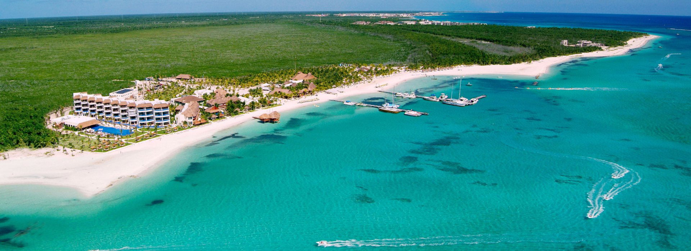
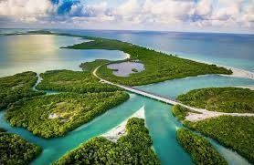

La historia de la Riviera Maya comienza con el origen de la civilización maya hace aproximadamente 3.000 años. Los mayas se extendieron por un vasta región llamada Mesoamérica, creando ciudades- estados independientes que vivían de la agricultura, la ganadería, la pesca y el comercio, unas tradiciones que se llevaron a cabo desde el año 292 antes de Cristo hasta la etapa post-hispánica. De este periodo queda la herencia de una de las culturas mesoamericanas precolombinas más importantes, un legado científico, matemático y astronómico mundial, los vestigios de construcciones y ciudades impresionantes, como son las pirámides de sus centros religiosos, los palacios de sus gobernantes, la residencia de los nobles; así como su cerámica, catalogada como de las más variadas, finas y elaboradas del mundo antiguo.
Este ancestral imperio comenzó a decaer con la conquista de los españoles que finalizó en 1697, con la toma de Tayasal, Guatemala.Pues precisamente es con la llegada de los españoles cuando se conoce la existencia de Yucatán. Se dice que en el año 250 después de Cristo, los primeros pobladores de la Riviera Maya bajaron del Petén para instalarse en la región suroriental de la península, en la zona de Bacalar de Quintana Roo. Su nombre proviene de las primeras exploraciones españolas hacia 1517. Se dice que se trata de una confusión ya que los españoles llamaron a la tierra tal y como entendían una palabra que oían a menudo en las respuestas indígenas: ‘Ci u t'ann’ que significa no entiendo tu hablar o no te comprendo.
 La Riviera Maya, conocida anteriormente como el Corredor el Cancún –Tulum, se rebautizó en 1999 con su actual nombre gracias al empeño de Miguel Ramón Martín Azueta, quien en ese momento era el alcalde del municipio de Solidaridad.
En la actualidad, la historia de la Rivera Maya se ha escrito con el crecimiento del destino turístico más importante de México y uno de los más visitados internacionalmente. Un destino idílico para el ocio, encuentros con la naturaleza
y practicar infinidad de deportes y actividades de aventura: esquí acuático, buceo, submarinismo, explorar cenotes, paseos a caballo, vela, paseos a Kayacs, observaciones arqueológicas, excursiones en la selva, paseos eco turísticos.